HP Helion 1.0 Development Platform: The Marketplace (Beta)
The Marketplace, currently in beta, is a repository where teams can download the latest services they need to accelerate development of their applications. In its beta incarnation, the Marketplace has a single application: the Vertica 7 Community Edition.
The following topics explain how to install and deploy an instance of Vertica 7 Community Edition:
- Marketplace concepts
- Prerequisites
- Installing a package
- Deploying an environment
- Creating a Deployed Instance of an Application
- Deployment Notes
Marketplace Concepts
The Marketplace deploys packages of services and applications to specified environments.
- The term Application covers both applications and services that can reside in the Marketplace. For the purposes of this documentation, we will use the term Application even though we are deploying a database, which is a service.
- Packages are zip files that contain instructions for Application deployment.
- Environments are groups of Applications managed by a single tenant. Applications within a single Environment may be logically related to one another, but do not have to be. Applications in different Environments are always independent from one another.
Prerequisites
Install the Marketplace component of the HP Helion Development Platform during the Development Platform install process.
Installing a Package
In this example, the package being installed is the Vertica 7 Community Edition package.
Note that you must log out of the Horizon dashboard and then log back in at least once after Marketplace installation before installing any Marketplace packages. This will ensure that Horizon has properly loaded all Marketplace services prior to package installation.
Create a Target Environment
Log into Horizon and open the Marketplace panel under your Project. Click on Application Catalog, and then click on the Environments tab.
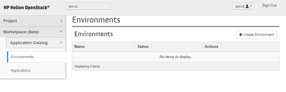
Click the Create Environment button.
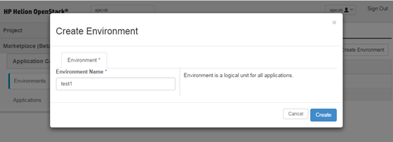
After the environment has been created, your view should look like this:
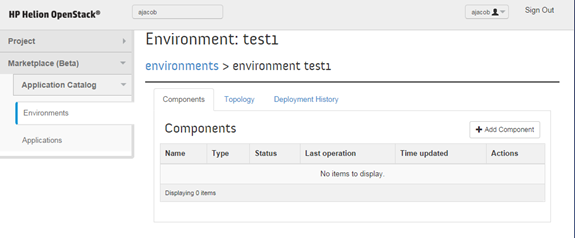
Create a Deployed Instance of an Application
The following section will show how to create an instance of Vertica 7 Community Edition in the environment created above.
Log in to the Horizon console and open the Marketplace panel under your Project. Click on Application Catalog and then click on the Applications tab. You will see the Vertica 7 Community Edition package.
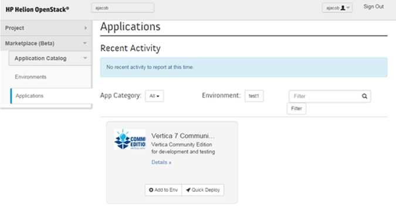
Click the Add to Env button from within the Vertica 7 Community Edition section. You will see an Add Application to <selected environment name> dialog. Agree to the Terms and Conditions, then scroll down to the bottom of the dialog and click on the Next button.
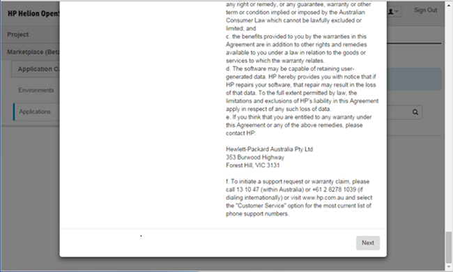
The Add Application to <selected environment> dialog will come up. Fill out
Application name - can be anything
Flavor for instances, can be:
- m1.medium
- m1.large
- m1.xlarge
- Select the image to use. In this case there is only one image, the Vertica 7 Community Edition (Debian) image.
- Add a keypair if you don't have one already, by selecting the + link. If you are adding a keypair, you will be prompted to supply a name and a public key. You can generate a public key in *nix using ssh-keygen or Windows® using puTTYgen. Insert public key text and click the Import Key Pair button.
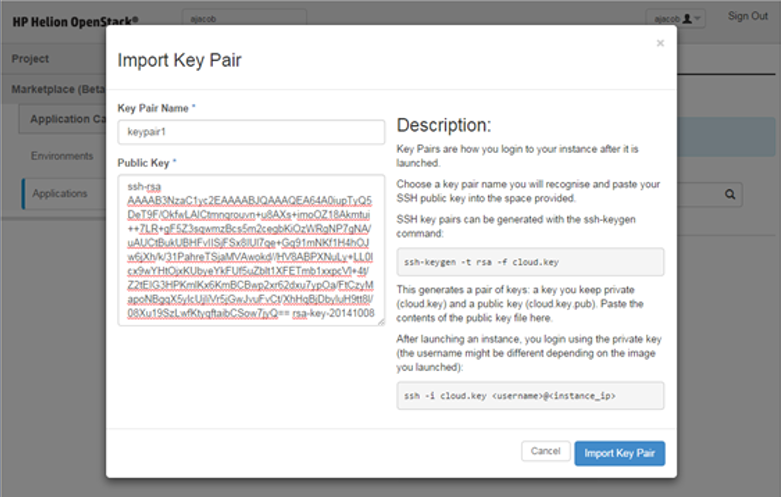
Supply a database name and a password, complying with the on-page instructions and then click the Next button.
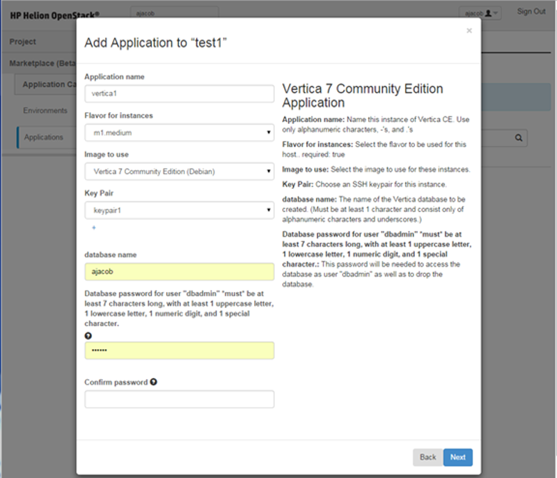
You will be prompted to add the Application you have created to the environment you selected. Click Create to continue.
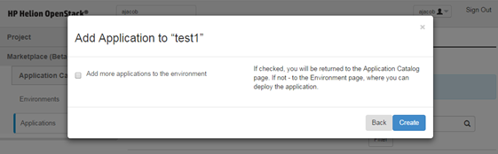
You will see that Vertica 7 Community Edition has been installed in the test1 environment. Note that the Environment has not been deployed yet. That is the next step.
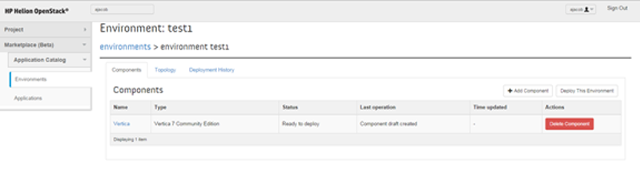
To deploy the environment, click on the Deploy This Environment button. Expect deployment to take between 5 and 10 minutes.
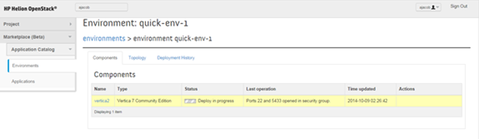
When this process has completed, you will see that the Vertica 7 Community Edition is available for consumption. Connection information is given in the last operation column.
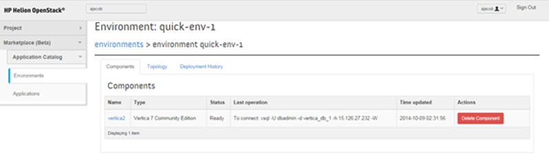
Take the following steps to ensure that your newly deployed instance of Vertica is secure by modifying its default key pair:
Log into the instance using the private key you used during database creation.
ssh dbadmin@<ip> -i <path to private key>Remove the existing default key from the keys file.
cd ~/.ssh grep -v "`cat id_rsa.pub`" authorized_keys > authorized_keys.tmp mv authorized_keys.tmp authorized_keys chmod 0600 authorized_keys rm authorized_keys.tmpRemove the existing default key:
rm ~/.ssh/id_rsa ~/.ssh/id_rsa.pubGenerate a new, unique default key pair:
ssh-keygen -b 2048 -t rsa -f /home/dbadmin/.ssh/id_rsa -q -N ""
You can also implement additional security by modifying the access rules for the security group associated with the environment that the Vertica instance was deployed into. In the example above, the environment name is Test1. The associated security group can be accessed from the Horizon panel as follows:
- In the Horizon console under Compute -> Access & Security, go to the Security Groups tab.
- Search for a group with the Test1 string in the group name. Group names are auto-generated to ensure that they are unique.
- Click Manage Rules.
- To change the access rules for SSH, add a new security group allowing access on port 22 from the IP range you wish to grant access to.
- To allow access to Vertica, add a new rule on port 5433 that specifies the IP range you wish to grant access to. You can then remove the corresponding default rule.
Deployment Notes
This section discusses some of the details of deployment that you may encounter.
- Environments cannot be deployed unless there is at least one Application in the Environment.
- Deploying an Application to an Environment that has already been deployed follows the same flow as above.
- In order to instantiate a newly-configured application, re-deploy its Environment.
- When an Environment is re-deployed, all applications it contains will be re-deployed.
If a Vertica instance is restarted or power cycled, the Vertica database must be restarted manually once the instance is reachable. This is by design to avoid potential database corruption in the event of a power event. Note that all VMs are shut down and then restarted during the Helion upgrade process.
- SSH into your instance
Become the dbadmin user:
sudo su - dbadminRun the following command:
admintools -t stop_db --database=DB_NAME --password=DB_PASSWORD